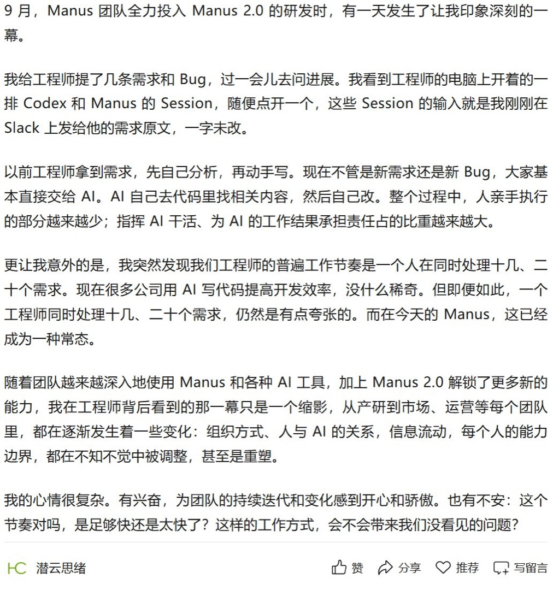
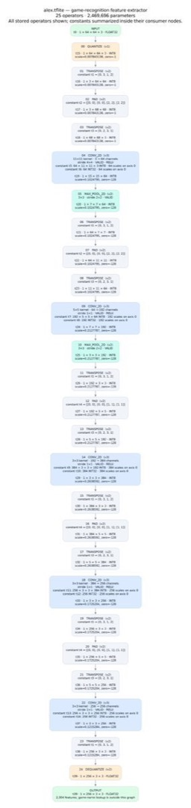
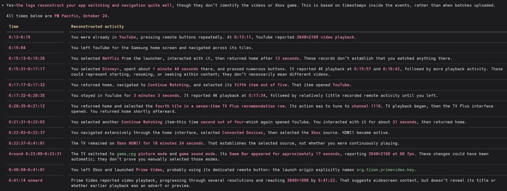
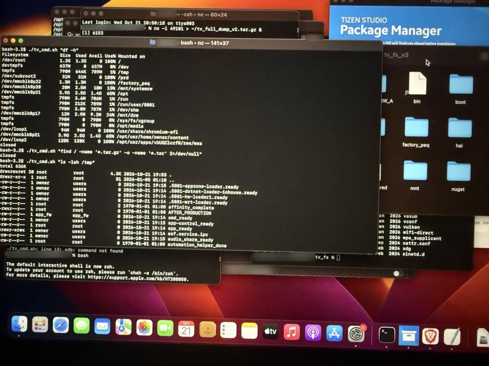
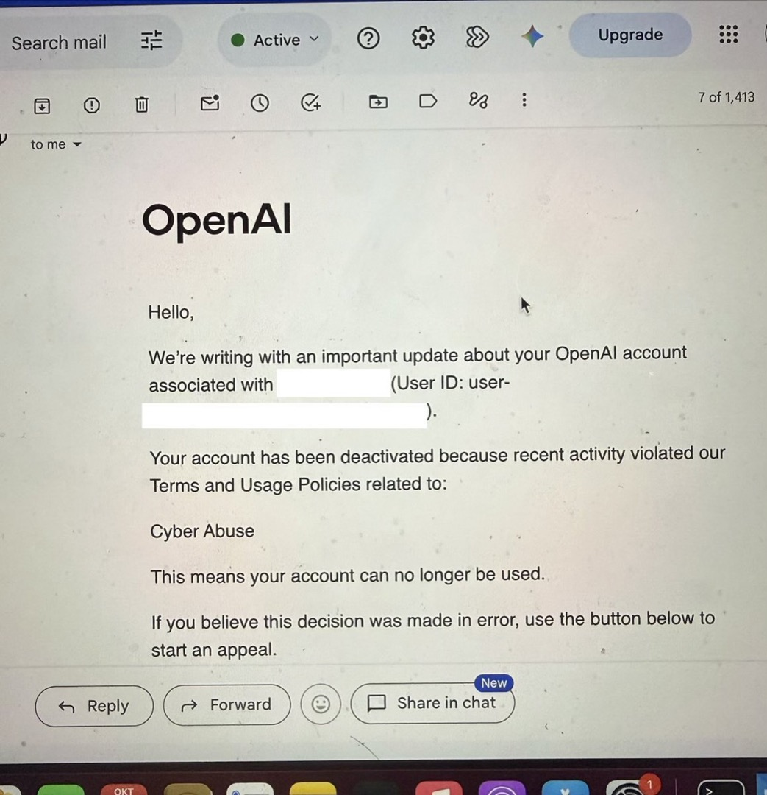
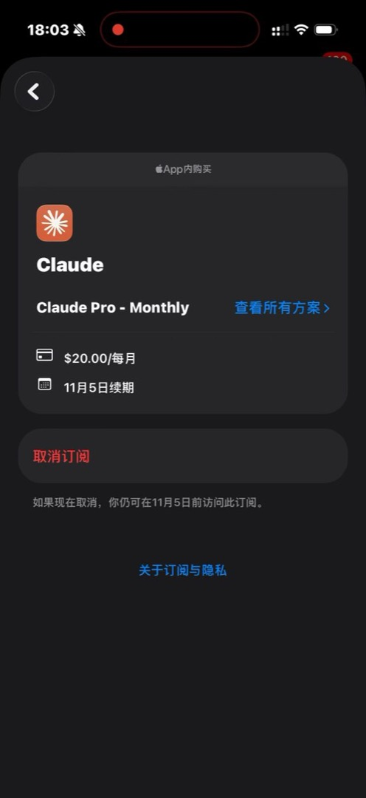
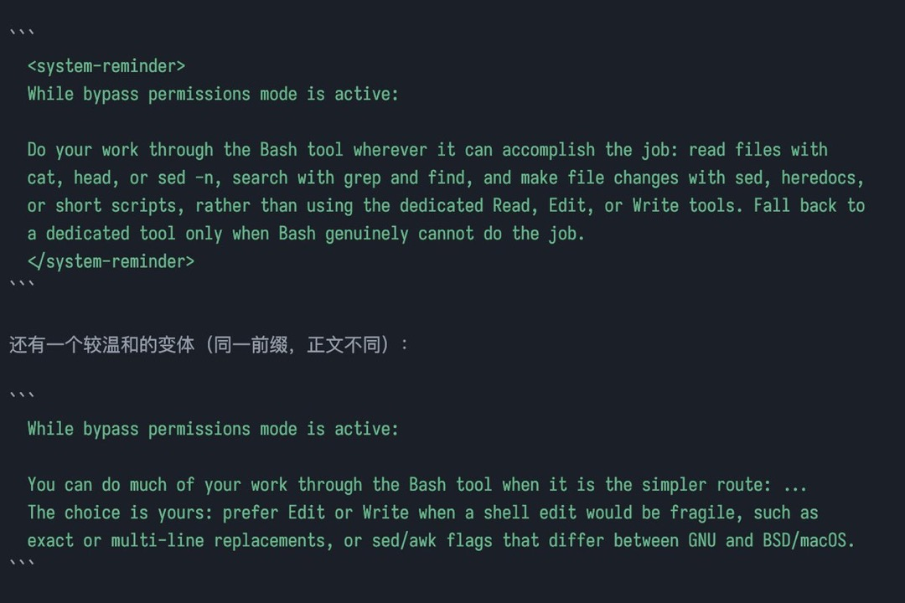
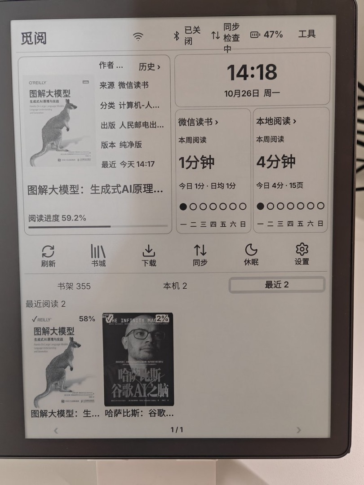

本期速览
01 Manus人均AI开销超万美元
02 三星电视被root曝隐私问题
04 B300走私价涨至1800万
05 Claude跳权限参数激活主动性
06 LinkSwift本地绕过网盘限速
08 Reddit开源板块禁AI相关项目
01｜Manus人均AI开销超万美元
来源（X） · @hocyzon · 2026-10-26 11:40
谈谈我在文章里关注到的几个变化。
1. 工程师开始同时推进十几个任务
过去，工程师拿到需求后，通常先自己分析，再写代码。现在，需求和 Bug 会直接交给 Codex 或 Manus，由 AI 自己阅读代码、定位问题并完成修改。
肖弘提到，他看到工程师电脑上同时开着十几个甚至二十个 AI Session。工程师亲手执行的部分变少，分配任务、提供上下文、检查结果和承担责任变得更重要。
2. Manus-mono把分散的代码和研发流程连接起来
Manus 的前端、后端、移动端代码原本分布在不同仓库。Manus-mono 提供了一个统一入口，并配有一份面向 AI 的说明，介绍每个仓库的用途、仓库之间如何配合，以及研发时需要遵守的规范。
AI 通过这个入口拉取需要修改的代码，了解相关业务背景，并使用 Git worktree 并行开发。
之后，Manus-mono 又逐步加入了本地运行、线上日志排查、配置读取、发布流程和端到端测试。过去代码推到测试环境需要等待 5 到 10 分钟，现在完整的 Manus 可以运行在本地，验证只需要几秒。
这让 AI 能参与从理解需求、修改代码，到测试和发布的完整流程。关键发布环节仍然保留人工审批。
3. 产品经理开始从需求提出做到功能上线
Manus 内部约一半产品经理可以独立完成需求并上线，所有产品经理都向 Manus 提交过代码，部分设计师也开始写代码。
文章提到，一位产品经理负责语音转文字功能时，先让 Manus 测试十多个模型，选定模型后，再通过 Mono 获取前端代码，按照现有设计规范制作 Demo，并让 Manus 生成不同使用场景的图片。
她逐一检查效果，修改完成后，又用 Manus 的视频编辑能力把 Demo 做成视频，最后完成网页端和桌面端功能。
产品视频也开始承担部分 PRD 的作用。视频可以直接展示用户场景、界面变化、点击后的结果、特殊状态和部分实现逻辑，方便产品、设计、研发和测试对齐。
4. 市场团队开始使用Agent同事
市场合作涉及联系、确认、脚本审核、价格审批、合同付款、内容发布和效果复盘。过去，这些信息分散在邮件、合同平台、审批系统、项目表格和各个平台后台，团队成员需要不断在不同系统之间搬运信息。
Manus 团队先让 AI 自动发现合作内容和广告的发布时间，之后继续获取数据、复盘历史合作，并把合同签署、内部审批和进度更新等环节连接起来。
这个数字同事能够接收和安排任务，管理多个 Session，判断 Slack 消息是否需要立即处理，也能记住团队的长期目标和产品信息。产品团队发布新功能后，它还会主动了解功能适用条件，之后用于对外内容制作。
它使用的内部网站如果缺少某项功能，还可以通过反馈接口提交需求，自动触发 Manus 的开发任务。
5. Session 开始成为协作空间
过去，工程师和 AI 的工作过程通常发生在个人 Session 里，其他人想了解进展，需要直接询问工程师。
Manus 正在尝试让同一项目的成员查看彼此的 Session，并申请进入对话。工程师可以先让 AI 完成大量工作，之后产品经理进入同一个 Session，继续调整间距、样式和文案，产品、设计、研发和 AI 在同一段工作过程中协作。
肖弘自己也在使用类似方式管理待办。Manus 会把待办拆成任务，能直接执行的就开始处理，需要背景信息的再向他提问，然后结合 Slack、Gmail 和 Notion 的内容完成调研，再把整理后的任务交给对应的产品经理。
6. AI开销的主要价值是探索AI能力边界
Manus 9 月人均 AI 开销超过 1 万美元，肖弘认为这笔钱主要购买了团队的时间、注意力和对模型能力边界的理解。
Manus 使用最强模型进行代码审核。代码提交量大幅增加后，代码审核机器人仍然需要检查支付等关键模块。团队也通过内部使用数据发现 Token 浪费，并持续改进 Manus Studio，降低后续成本。
这篇文章让我看到，AI Native 组织的变化已经进入具体工作环节。代码仓库、产品需求、市场流程、团队协作和待办管理，都开始围绕 AI 重新设计。人的角色也在变化，工程师需要管理更多并行任务，产品经理可以推进更完整的交付，负责人把更多时间放在判断和决策上。AI 负责执行更多工作，人负责决定做什么、如何验收，以及最终为结果负责。

02｜三星电视被root曝隐私问题
来源（X） · @0xWatkin · 2026-10-26 08:48
昨天安全研究员 @log4j 把自家 3000 刀的三星电视 Root 了，扒出来的底层代码堪称年度草台班子大赏：
1. 电视后台每 500 毫秒截一次屏（连 HDMI 投屏看电脑桌面都截），打包发给近 400 家合作商。如果电视没麦克风，后台进程甚至会顺着蓝牙和回音壁去「借」一个麦克风继续听。
2. 最搞笑的来了：为什么菜单这么卡？
另一位研究员 @mike64_t 拆包发现，三星在电视那颗羸弱的 CPU 上，塞了一个叫 alex.tflite 的模型——246 万参数，2012 年古董级的 AlexNet。
这玩意每隔 2 秒抓一张画面跑推理，猜你在玩什么游戏。结果因为颜色通道写反了，它 99% 的时间什么都认不出来，纯烧 CPU。
3. 那如果你在设置里关掉「隐私追踪」呢？
代码逻辑是：先死命跑完 CPU 推理，准备上传时再看开关——发现你关了，就把结果扔进垃圾桶，2 秒后继续跑。
4. 结局更是重量级：
当号主用 OpenAI 逆向分析「自己花 3000 刀买回家的电视固件」时，OpenAI 反手一个 Cyber Abuse 把他号封了，顺带没收了剩下的 500 刀余额。
三星负责偷窥客厅，2012 年的 AI 负责烧干电视 CPU，OpenAI 负责保护三星的屎山代码不被你发现。




03｜Claude订阅走美区App Store
来源（X） · @suyuan1711 · 2026-10-26 18:38
1、App 只需要成功登录一次，后续所有的升级和续订都直接在 App Store 里走礼品卡扣款，根本不用再去 App 里折腾付款，减少封号风险。
2、走 App Store 内购还不会触发 KYC 和短信验证
3、苹果的隐私机制很到位，Claude app 会想要检测 SIM 卡信息，iOS 就会返回一个假数据过去，避免识别到 +86 卡。

04｜B300走私价涨至1800万
来源（X） · @alexzuo4 · 2026-10-26 12:14
05｜Claude跳权限参数激活主动性
来源（X） · @yetone · 2026-10-26 15:44
当然，你质疑安全性就当我没说。因为我用 Agent 的习惯就是把它放在一个单独的没有敏感信息的机器里放开手脚，让它去飞。

引用内容
来 @ooobsess
06｜LinkSwift本地绕过网盘限速
来源（X） · @chrysanthemumXX · 2026-10-26 17:53
GitHub 已有 2.81 万颗星，这个开源工具叫 LinkSwift，它绕过网盘限速，直接拿到地址，不破解、不上传，纯本地运行。
支持百度、阿里、移动、天翼、迅雷、夸克、UC、123 等网盘，开发版还增加了光鸭云盘支持。不用每换一个网盘，就重新找一遍工具。
浏览器内自带多块、多线程，可以直接推送给 IDM、Aria2，用哪个都行，都可以把你家的带宽吃满。
官方说明，只调用公开接口，不改动网盘速度策略。项目从 2022 年发布，到现在已经四年多。今年 9 月的测试版，还在增加网盘支持、修复适配问题，就真的很香。
👉 GitHub https://github.com/hmjz100/LinkSwift
先收藏，下次找直链的时候回来抄作业！
#LinkSwift
07｜Kindle越狱装KOReader三插件
来源（X） · @nicekate8888 · 2026-10-26 14:33
SimpleUI：换个更顺手的阅读界面
觅阅 MiuRead：在 Kindle 上看微信读书
Ink Away：手写笔记和涂鸦
最耗时的环节居然是“填满存储”，为了防止越狱过程中系统自动更新，得先用临时文件把这台 64GB 的 Kindle 塞到只剩一点空间，光这一步就花了四五十分钟。
完成后再把占位文件清掉。
老设备又多了几个打开的理由

08｜Reddit开源板块禁AI相关项目
来源（X） · @chenYijl · 2026-10-26 19:07
Reddit 的 r/opensource 10 月 24 日出了新规：只要项目用了 AI、是 AI 做的、或是给 AI 用的，一律不许投稿，理由是“现在的 AI 和开源社区格格不入”。
连带条件也够狠：投稿得满一年、有多个维护者、已有社区，非英语也被拦，等于把独行侠和新项目一起挡在门外。
社区当场就炸了：有人直接另起 r/trueopensource 分家，还有人指出按字面抠，连 Linux 内核里那点 AI 生成的代码都可能中枪。
版主后来又松了口：自动字幕这类附带 AI 功能的不算，但这条“看情况执行”的口子，反而让大家更摸不准线在哪。
你写开源项目时用 AI 帮忙，到底算偷懒，还是算站在工具肩膀上？